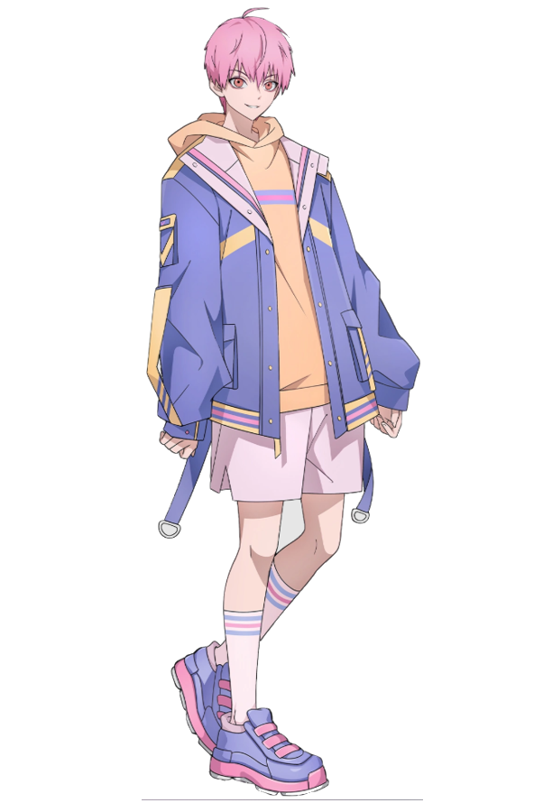
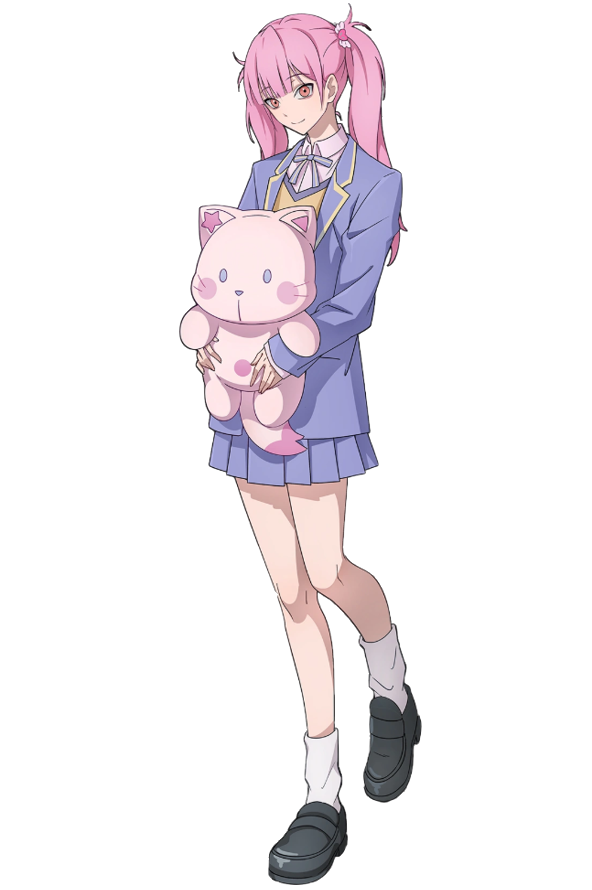
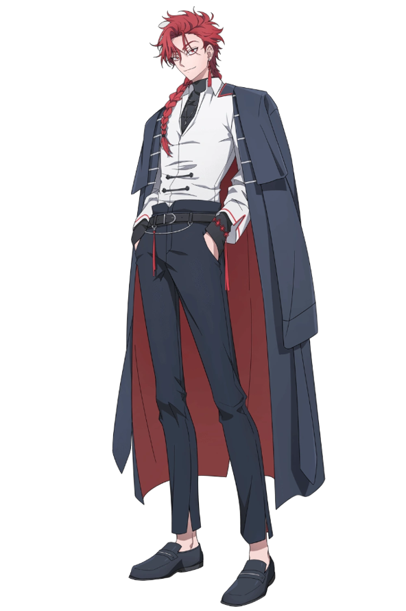

Personajes
| Personaje | Nombre | Descripción | Preferencias |
|---|---|---|---|
 |
Chen Xiaoshi 程小时 |
Edad: 21
Género: Masculino Cumpleaños: 15 de abril Altura: 180 cm Peso: 75 kg Color de ojos:marrón (amarillos al usar su habilidad) Color de pelo: negro Habilidad: Posee al fotógrafo en el momento exacto en que se tomó la foto, controlando temporalmente sus palabras y acciones. También experimenta lo que la persona a la que observa siente física y emocionalmente. |
Le gusta: La fotografia, el baloncesto, cocinar y los videojuegos.
No le gusta: Las matemáticas, la soledad y la lluvia |
 |
Lu Guang 陆光 |
Edad: Desconocida
Género: Masculino Cumpleaños: 24 de octubre Altura: 175 cm Peso: 70 kg Color de ojos:grises (azules al usar su poder) Color de pelo: blanco Habilidad: Anticipa los hechos 12 hs dentro de la foto y guía a Chen Xiaoshi mentalmente. |
Le gusta: La comida gourmet, el baloncesto, leer, dormir y tomar el sol. No le gusta: El desorden y que los planes se arruinen. |  |
Qiao Ling 乔苓 |
Edad: 22
Género: Femenino Cumpleaños: 16 de marzo Altura: 160 cm Peso: 50 kg Color de ojos: marrón oscuro Color de pelo: negro Rol: Intermediaria y amiga de la infancia de los protagonistas. |
Le gusta: Correr, la música, el té con leche y el "chisme". No le gusta: La suciedad y perder el tiempo. |
| Personaje | Nombre | Descripción |
|---|---|---|
 |
Li Tianchen 李天辰 |
Edad: 19
Género: Masculino Cumpleaños: 11 de junio Altura: 168 cm Color de ojos: rosa coral (rojos al usar su habilidad) Color de pelo: rosa Habilidad: Posee a una persona mediante contacto físico. La persona poseída cambia su color de ojos a color rojo. |
 |
Li Tianchen 李天希 |
Edad: 19
Género: Femenino Cumpleaños: 11 de junio Altura: 162 cm Color de ojos: rosa coral (blancos al usar su habilidad) Color de pelo: rosa Habilidad: posee a otras personas usando una fotografía suya, puede ver su presente y acceder a sus recuerdos. Sin embargo, no puede controlar sus acciones y solo puede observarlas. También experimenta lo que la persona a la que observa siente física y emocionalmente. |
 |
Liu Xiao 刘枭 |
Edad: 22
Género: Masculino Cumpleaños: 10 de diciembre Altura: 183 cm Color de ojos: azul oscuro Color de pelo: azul oscuro Habilidad: Puede escuchar los latidos de otras personas y tiene otras habilidades no específicadas. |
 |
Xia Fei 夏斐 |
Edad: 23
Género: Masculino Cumpleaños: 27 de julio Altura: 185 cm Color de ojos: naranja Color de pelo: Rubio y negro |
 |
Vein 萧未影 |
Edad: 25
Género: Masculino Cumpleaños: 23 de agosto Altura: 187 cm Color de ojos: Rojo Color de pelo: Rojo con las puntas negras |
 |
Wang Qing 王青 |
Edad: 31
Género: Masculino Cumpleaños: 13 de enero Altura: 187 cm Color de ojos: amarillos (celestes al usar su habilidad) Color de pelo: rubio Habilidad: posee la habilidiad sobrenatural de fingir la muerte de otra persona gritando su nombre. |